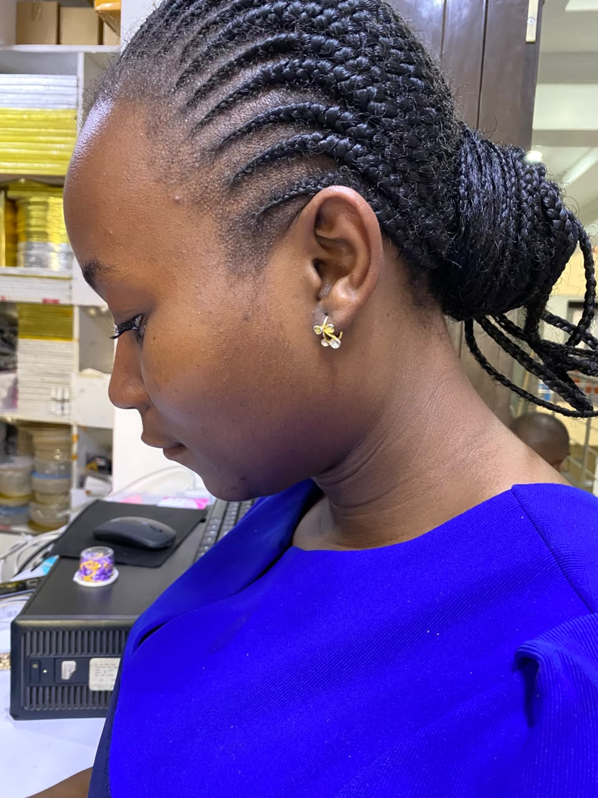

Current role
Head of Department
School of Hospitality & Tourism
ICS Technical College
 CATHERINE NERIMA
CATHERINE NERIMA
Hospitality Lecturer · Educator · Mentor · Industry Professional
Catherine Nerima is an academic leader and hospitality educator shaping industry-ready professionals through practical learning, thoughtful mentorship, and strong partnerships.

Based in Nairobi, Kenya • Available for collaborations
About the Catherine
I am a passionate and dedicated Hospitality Lecturer committed to developing competent, confident, and industry-ready professionals for the dynamic world of hospitality and tourism. With a strong interest in hospitality operations, customer service, food and beverage management, accommodation services, tourism, and professional development, I strive to connect academic learning with real-world industry practice.
My teaching approach is student-centred, practical, and engaging. I believe that effective hospitality education goes beyond the classroom and should equip learners with the technical knowledge, professional skills, creativity, communication abilities, and positive attitude required to succeed in a competitive global industry.
As an educator and mentor, I am passionate about supporting students throughout their learning journey and helping them discover their potential. I create interactive learning experiences through practical training, case studies, demonstrations, discussions, projects, and industry-based examples.
I am also committed to continuous professional growth and keeping up with emerging trends, technologies, customer expectations, and best practices within the hospitality and tourism sector. My goal is to contribute to the development of highly skilled, ethical, innovative, and customer-focused hospitality professionals who can make a meaningful impact in the industry.
Hospitality Management · Food & Beverage Service · Accommodation Operations · Front Office Operations · Customer Service · Tourism · Events Management · Hospitality Entrepreneurship · Training & Mentorship · Professional Development
Leadership at a glance
Current role
School of Hospitality & Tourism
ICS Technical College
What I bring
Strategic academic leadership grounded in the practical demands of hospitality and tourism.
Department planning, faculty support, quality assurance and student-centred programme delivery.
Practical, outcome-led learning experiences aligned with changing industry expectations.
Building relationships that create relevant exposure, placements and career pathways.
Helping emerging professionals build the confidence and discipline to thrive in service.
Career journey
A record of growth across hospitality education and industry-focused training.
Academic leadership
School of Hospitality & Tourism · ICS Technical College
Lead departmental strategy, academic quality and industry engagement while guiding students and faculty toward exceptional outcomes.
Teaching & learning
ICS Technical College
Delivered applied hospitality and tourism learning, supporting students as they translated theory into career-ready practice.
Earlier experience
[Organisation name]
[Add a concise description of the role, scope and contribution.]
Credentials & knowledge
Selected qualifications, professional development and academic contributions. Replace the placeholders below with the final document files and links.
Professional profile
A complete record of experience, education, publications and professional development.
Academic paper
[Journal, conference or publication details]
Academic paper
[Journal, conference or publication details]
Certificates
Start a conversation
Open to academic partnerships, hospitality training initiatives, speaking opportunities and professional collaborations.
[email@example.com] ↗